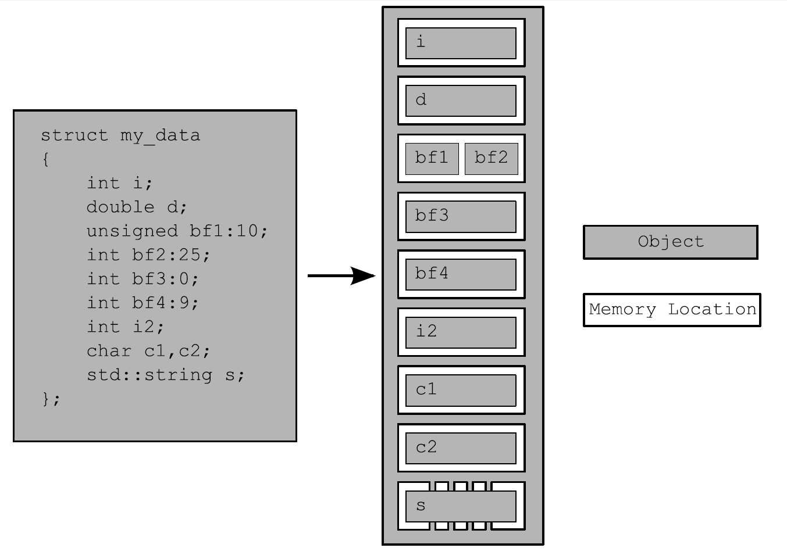

5.1 内存模型
内存模型：一方面是内存布局，另一方面是并发。并发的基本结构很重要，特别是低层原子操作。因为C++所有的对象都和内存位置有关，所以我将从基本结构讲起。
5.1.1 对象和内存位置
C++程序中数据都是由对象构成，比如：创建int的衍生类，或者是基本类型中存在有成员函数，或是像在Smalltalk和Ruby语言那样——“一切都是对象”。对象仅仅是对C++数据构建块的声明，C++标准定义类对象为“存储区域”，但对象还是可以将自己的特性赋予其他对象。
像int或float的对象是基本类型，还有用户定义类的实例。一些对象(比如，数组，衍生类的实例，特殊(具有非静态数据成员)类的实例)拥有子对象，但是其他对象就没有。
无论是怎么样的类型，都会存储在一个或多个内存位置上。每个内存位置不是标量类型的对象，就是标量类型的子对象，比如：unsigned short、my_class*或序列中的相邻位域。当使用位域时就需要注意：虽然相邻位域中是不同的对象，但仍视其为相同的内存位置。如图5.1所示，将一个struct分解为多个对象，并且展示了每个对象的内存位置。

图5.1 分解一个struct，展示不同对象的内存位置
首先，完整的struct是一个有多个子对象(每一个成员变量)组成的对象。位域bf1和bf2共享同一个内存位置(int是4字节、32位类型)，并且std::string类型的对象s由内部多个内存位置组成，但是其他的成员都拥有自己的内存位置。注意，位域宽度为0的bf3是如何与bf4分离，并拥有各自的内存位置的。
(译者注：图中bf3可能是一个错误展示，在C++和C中规定，宽度为0的一个未命名位域强制下一位域对齐到其下一type边界，其中type是该成员的类型。这里使用命名变量为0的位域，可能只是想展示其与bf4是如何分离的。有关位域的更多可以参考wiki的页面)。
这里有四个需要牢记的原则：
- 每个变量都是对象，包括其成员变量的对象。
- 每个对象至少占有一个内存位置。
- 基本类型都有确定的内存位置(无论类型大小如何，即使他们是相邻的，或是数组的一部分)。
- 相邻位域是相同内存中的一部分。
你会奇怪，这些在并发中有什么作用？
5.1.2 对象、内存位置和并发
这部分对于C++的多线程来说至关重要。当两个线程访问不同的内存位置时，不会存在任何问题，当两个线程访问同一个内存位置就要小心了。如果线程不更新数据，只读数据不需要保护或同步。当线程对内存位置上的数据进行修改，就可能会产生条件竞争。
为了避免条件竞争，线程就要以一定的顺序执行。第一种方式，使用互斥量来确定访问的顺序。当同一互斥量在两个线程同时访问前锁住，那么在同一时间内就只有一个线程能够访问对应的内存位置。另一种是使用原子操作决定两个线程的访问顺序，当多个线程访问同一个内存地址时，对每个访问者都需要设定顺序。
如果不规定对同一内存地址访问的顺序，那么访问就不是原子的。当两个线程都是“写入者”时，就会产生数据竞争和未定义行为。
以下的声明尤为重要：未定义的行为是C++中的黑洞。根据语言的标准，一旦应用中有任何未定义的行为，就很难预料会发生什么事情。我就知道一个未定义行为的特定实例，让显示器起火。虽然，这种事情应该不会发生，但是数据竞争绝对是一个严重的错误，要不惜一切代价避免它。
另一个重点是：当程序对同一内存地址中的数据访问存在竞争，可以使用原子操作来避免未定义行为。当然，这不会影响竞争的产生——原子操作并没有指定访问顺序——而原子操作会把程序拉回到定义行为的区域内。
了解原子操作前，有关对象和内存地址的概念也需要了解：修改顺序。
5.1.3 修改顺序
C++程序中的对象都有(由程序中的所有线程对象)在初始化开始阶段确定好修改顺序的。大多数情况下，这个顺序不同于执行中的顺序，但在给定的程序中，所有线程都需要遵守这个顺序。如果对象不是原子类型(将在5.2节详述)，必须确保有足够的同步操作，确定线程都遵守了修改顺序。当不同线程在不同序列中访问同一个值时，可能就会遇到数据竞争或未定义行为(详见5.1.2节)。如果使用原子操作，编译器就有责任去做同步。
因为当线程按修改顺序访问一个特殊的输入，所以投机执行是不允许的。之后的读操作必须由线程返回新值，并且之后的写操作必须发生在修改顺序之后。虽然，所有线程都需要遵守程序中每个独立对象的修改顺序，但没有必要遵守在独立对象上的操作顺序。在5.3.3节中会有更多关于不同线程间操作顺序的内容。
所以，什么是原子操作？怎样规定顺序？